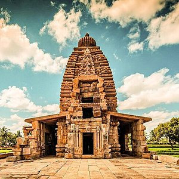

Goa is a state on the southwestern coast of India within the Konkan region, geographically separated from the Deccan highlands by the Western Ghats.
It is surrounded by the Indian states of Maharashtra to the north and Karnataka to the east and south, with the Arabian Sea forming its western coast. It is India's smallest state by area and its fourth-smallest by population. Goa has the highest GDP per capita among all Indian states, two and a half times as high as the GDP per capita of the country as a whole. The Eleventh Finance Commission of India named Goa the best-placed state because of its infrastructure, and India’s National Commission on Population rated it as having the best quality of life in India It is the third-highest ranking among Indian states in human development.

Hubli, officially known as Hubballi, is a City in the Indian state of Karnataka. The twin cities Hubli–Dharwad form the second largest city in the state by size and population and the largest city in North Karnataka.
Hubli is located in Dharwad district of Karnataka and is the taluk headquarters of Hubli City and Hubli Rural. Although it hosts the HDMC office, the district headquarters is located in Dharwad.
It also houses the largest number of government offices outside Bangalore. In 2016, Hubli-Dharwad was selected for solar city / green city master plans. In 2017, government of India included Hubli-Dharwad city for a smart city project, a flagship scheme for overall development of infrastructure in the twin-cities.

Bangalore, officially known as Bengaluru, is the capital and the largest city of the Indian state of Karnataka. It has a population of more than 8 million and a metropolitan population of around 11 million, making it the third most populous city and fifth most populous urban agglomeration in India. Located in southern India on the Deccan Plateau, at a height of over 900 m (3,000 ft) above sea level, Bangalore is known for its pleasant climate throughout the year. Its elevation is the highest among the major cities of India.
The city's history dates back to around 890 CE, in a stone inscription found at the Nageshwara Temple in Begur, Bangalore. The Begur inscription is written in Halegannada, mentions 'Bengaluru Kalaga' (battle of Bengaluru). It was a significant turning point in the history of Bangalore as it bears the earliest reference to the name 'Bengaluru'. In 1537 CE, Kempé Gowdā a feudal ruler under the Vijayanagara Empire established a mud fort considered to be the foundation of modern Bangalore and its oldest areas, or petes, which exist to the present day. After the fall of Vijayanagar empire in 16th century, the Mughals sold Bangalore to Chikkadevaraja Wodeyar (1673–1704), the then ruler of the Kingdom of Mysore for three lakh rupees. When Haider Ali seized control of the Kingdom of Mysore, the administration of Bangalore passed into his hands.